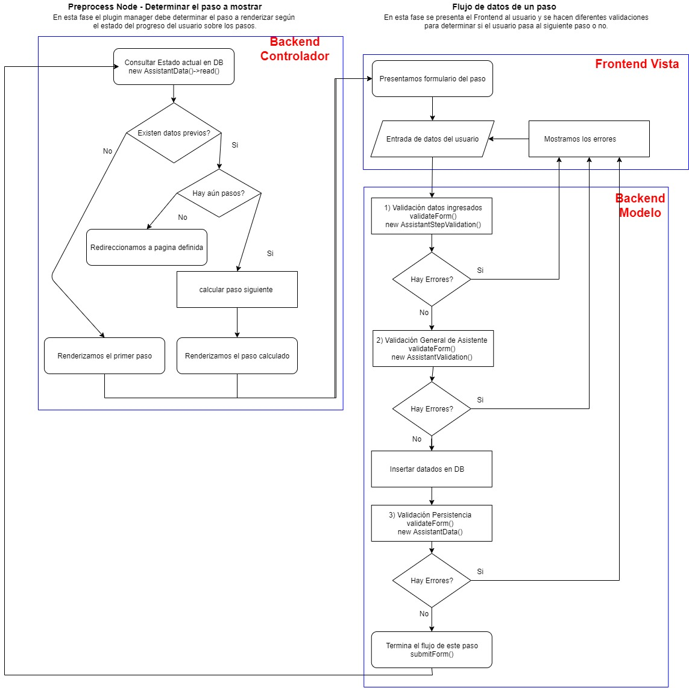

El modulo cuenta con la siguiente estructura de archivos y directorios, de los cuales hablaremos a continuación.
Assistantmanager/
|--php/
| |--class/
| | |--Assistant.php
| | |--AssistantData.php
| | |--AssistantStatus.php
| | |--AssistantStep.php
| | |--AssistantValidador.php
|
|--pm/
|
|--sql/
| |--schema.sql
|
|--src/
| |--Controller/
| | |--PMController.php
| |
| |--Form/
| | |--pmdefault.php
| | |--pmform.php
|
|--assistantpluginmanager.info.yml
|--assistantpluginmanager.module.yml
|--pmconfig.yml.samplephp/class/Assistant.php
Clase que encapsula la lógica del asistente tanto para el backoffice.
En esta clase se encapsula el código que permite cargar la configuración de los subplugins de forma dinámica.
Realiza tareas como cargar en el backoffice el plugin que se selecciona y guardar los datos de los campos dinámicos, asi como repoblarlos cuando se esta editando un paso.
php/class/AssistantData.php
Clase con la lógica para procesar los datos del usuario ingresados mediante los asistentes.
Contiene los métodos CRUD del asistente así como la lógica para determinar que paso mostrar según el estado del usuario.
php/class/AssistantStatus.php
Clase auxiliar en el manejo de errores de los pasos del asistente.
php/class/AssistantStep.php
Clase con la lógica para generar el formulario dinámico de un paso en el frontoffice y proveer su información.
Según la información obtenida por AssistantData y los cálculos correspondientes se llamará finalmente a esta clase para que se encargue de generar un formulario en especifico.
php/class/AssistantValidador.php
Clase auxiliar para validar datos del usuario.
pm/
Directorio que contiene los subplugins internos del Asistente.
Cada directorio dentro de este corresponde con un plugin que debe estar registrado como termino de taxonomía para poder usarse.
sql/schema.sql
Archivo con la estructura SQL de la base de datos que requiere el plugin.
src/Controller/PMController.php
Archivo con rutas por defecto para redirigir al usuario al concluir el asistente y no tener ningún otro paso definido, y rutas para poder crear o vaciar la base de datos del modulo (Solo la ruta para vaciar base de datos esta operativa, se recomienda desactivarla en producción).
src/Form/pmdefault.php
Clase para construir formulario que se muestra por defecto cuando el asistente ya no cuenta con pasos.
src/Form/pmform.php
Clase base para construir formularios dinamicos para los pasos del asistente.
Esta clase llama en automático el código del subplugin activo en las fases correspondientes (Pre-Build, Build, Validate, Send).
assistantpluginmanager.module.yml
Archivo principal con la logica del plugin, en el se incluyen los demas archivos del sistema y mediante funciones definidas por Drupal se inyecta el código para el Backoffice y el Frontoffice
assistantpluginmanager.info.yml
Archivo que permite que el plugin sea reconocido por el nucleo de Drupal
pmconfig.yml.sample
Archivo de configuración del plugin, este debe ser renombrado por "pmconfig.yml" y en el se encuentran los nombres de maquina de tipos de contenido, taxonomias y campos que se requieren para el funcionamiento.
Funcionamiento del asistente Explicado usando MVC
